Cádiz
A city surrounded by the sea
Culture, seafood, beach and sunset in one of Europe’s oldest cities. La Caleta for romance, La Victoria for kilometres of beach.
The course, the people behind it, the estate, the real estate and the plan to make it one of Europe’s very best.
Golf in the morning. In the afternoon, an entire Andalucía to choose from, and every evening, home.
Golf is the main business. The destination is what it adds.
Patiño Resorts Arcos and Valderrama Investments SA aim to revive the Arcos Gardens resort and make it one of Europe’s very best, with the golf course as the driving force of its recovery and success.
Restore and noticeably upgrade an 18-hole Landmark course, redesigned by Kyle Phillips, so it becomes a true source of revenue and a top-tier tourist product.
An early 20th-century cortijo with ten rooms, villas on the estate and a 28,847 m² plot for a brand-new five-star hotel.
64,259 m² of residential floor space, with around 80% of the roads and infrastructure already built.

For more than 20 years, Mr Felipe Ortiz-Patiño, together with his father Mr Jaime Ortiz-Patiño, was one of the main driving forces behind the creation of Valderrama, leading it to be ranked number one in Continental Europe and to host the world’s most prestigious golf events since 1988.
Mr Felipe Ortiz-Patiño, former Vice President and President of Valderrama Golf Club.
Valderrama Investments SA, a company owned by Mr Felipe Ortiz-Patiño.
This project will directly and indirectly combine the names Patiño and Valderrama.
 The course
The courseArcos Gardens, a resort and golf course designed by the American company Landmark, was chosen because of the quality and the design of its course, which allows it, with adjustments and upgrades, to become one of Europe’s very best and act as the driving force in the recovery and success of the resort.
The only championship course in the Sierra de Cádiz, with wide, rolling fairways that follow the natural relief of the land and views over the lake.
Driving range, pitching and bunker area, two putting greens and three chipping greens. Buggies and clubhouse on site.
Yet it was never a “must play” course, and never became a tourist attraction in the way Sotogrande or Valderrama did. That is the gap the project closes.
Not only restore but noticeably upgrade the existing course so it can become a true source of revenue and a top-tier tourist product.
Equal the quality benchmark set by Valderrama in service and maintenance, and create one of Europe’s most coveted and prestigious clubs and destinations.
Top 100 golf courses in Continental Europe.
The world-renowned architect selected to redesign and upgrade the course.
A substantial increase in the quality of maintenance and service.
Among the very best in Spain, a “must play” course and a venue for major professional events, like nearby Valderrama.
With the prestige and expertise of the new ownership and that of Kyle Phillips, this objective is more than achievable.
A clubhouse opening straight onto the course, whitewashed architecture and old olive trees. The resort already exists: the project brings the investment, the standard and the name.
 The terrace
The terrace The clubhouse
The clubhouse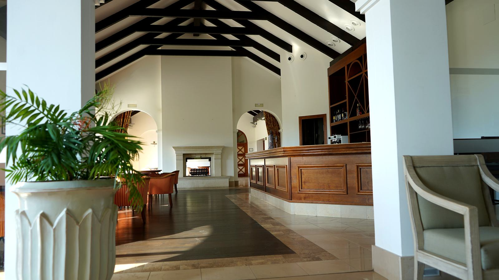
The clubhouse lounge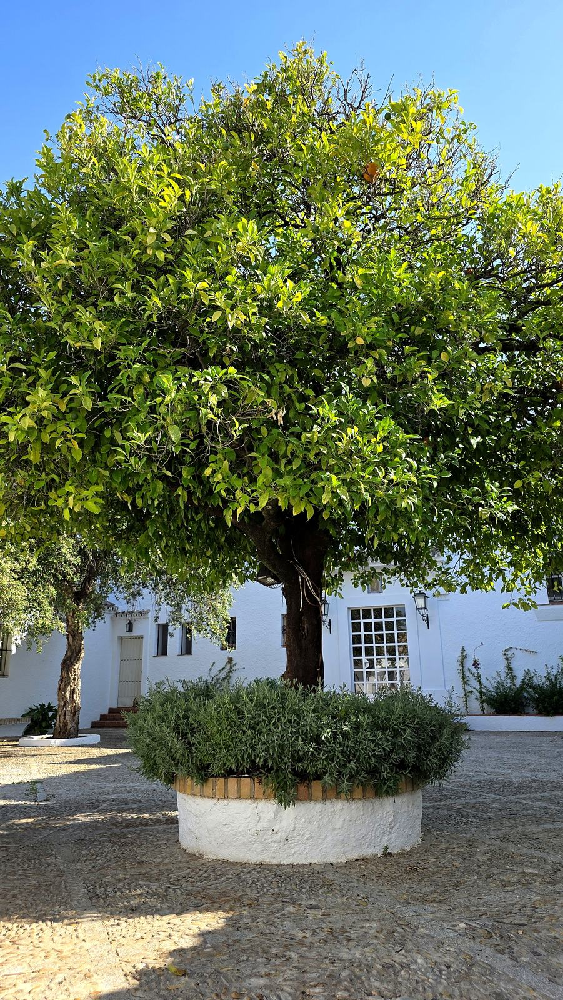
The courtyardThe building, which was operated as a small hotel, comprises ten rooms, a restaurant, lounges, a patio, two terraces, a swimming pool and sports facilities. The use of existing homes and villas adds 5–10 rooms beyond those of the cortijo itself, and its large gardens offer excellent conditions for hosting social events.
The goal is a global and complete offer, making Patiño Resorts Arcos a modern destination for a large variety of users.
The vision of recovering and repositioning the resort is not limited to golf and hospitality: it also embraces the entire residential development. The revival of tourism and sport is what will bring its real estate back to life.
The infrastructure is of the highest quality and provides all services, and the homes already built are fully in keeping with the repositioning and rebranding of the resort. The hotel plot opens the way to a brand-new five-star hotel and, if so decided, an extension to the cortijo with a wellbeing, relaxation and spa unit.
 Arrival
ArrivalThe Atlantic coast, the Cádiz countryside and the mountains. The province has been classified by The New York Times as one of the 52 most attractive destinations in the world.
Arcos, a town of 31,267 inhabitants (in 2025), was first a Roman post, “Colonia Arcensis”, later a Moorish fortified town, “Medina Ar-Kosch”, and finally, from 1250 onwards, a Spanish town. It is considered one of Spain’s most beautiful and picturesque towns.
 Arcos de la Frontera
Arcos de la FronteraArcos can be accessed by motorway from Seville (AP-4), Jerez (A-382), Cádiz and the Atlantic coast (AP-4), and the Costa del Sol, Marbella and Sotogrande (A-381). From the Sierra, access is available from Ronda and from Campillos (Málaga).
Jerez has a major railway station, with numerous connections to Madrid. The Alvia high-speed trains put the capital 3 hours 50 minutes from Jerez.
Four international airports, all within a radius of 220 kilometres:
By motorway. Direct flights to Madrid, Barcelona and other Spanish cities, and some to European countries, especially in summer.
Nearly 10 million passengers in 2025, with a very large number of international flights.
About one hour from Arcos.
26.7 million passengers in 2025, by motorway.
They can have both.
Arcos Golf by Patiño Resorts should not compete exclusively with other golf resorts. Its competitive advantage is broader.
A guest can spend fourteen days here without repeating the same experience.
The next step is not simply to recommend these places. It is to curate them: a portfolio of eleven experiences, each able to include private transport, reservations, guides and selected restaurants.
The guest does not need to organise Cádiz.
Arcos Golf by Patiño Resorts organises Cádiz for the guest.
Part II shows what this means for the guest, day by day.
Go to Part II · The experienceWe welcome conversations with investors who share the ambition of creating one of Europe’s most coveted golf destinations.
Patiño Resorts Arcos
Arcos de la Frontera, Cádiz
This document is for information purposes only and does not constitute an offer or solicitation to buy or sell any securities or interests. Figures and objectives are taken from the project description prepared by Patiño Resorts Arcos and are subject to change. Distances are approximate.
There are places you visit. And there are places from which you can discover an entire region. Arcos Golf by Patiño Resorts is one of them.
Set beside Arcos de la Frontera, between the Atlantic Ocean and the mountains of Cádiz, it offers something increasingly difficult to find: space, tranquillity and nature without giving up access to extraordinary experiences.
 On the course
On the course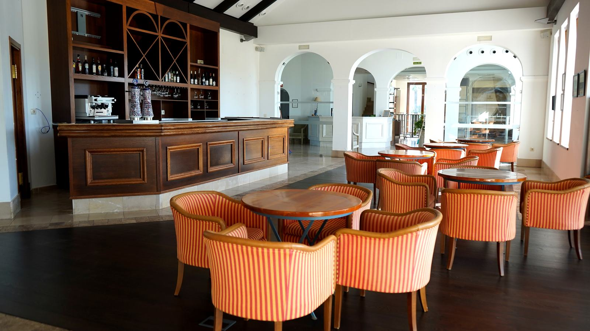
After the round · The barAt the centre of every stay is golf. But the philosophy is different. Here, golf is only the beginning.
18 holes designed by Chris Cole and Jeff Potts. The only championship course in the Sierra de Cádiz, with wide, rolling fairways that follow the natural relief of the land and views over the lake.
Driving range, pitching and bunker area, two putting greens and three chipping greens. Buggies and clubhouse on site.
Villas of two to five bedrooms, each with private pool, terrace and garden, within a gated estate with tennis and padel courts.
4 km from Arcos de la Frontera. 27 minutes from Jerez airport. One hour from Seville.
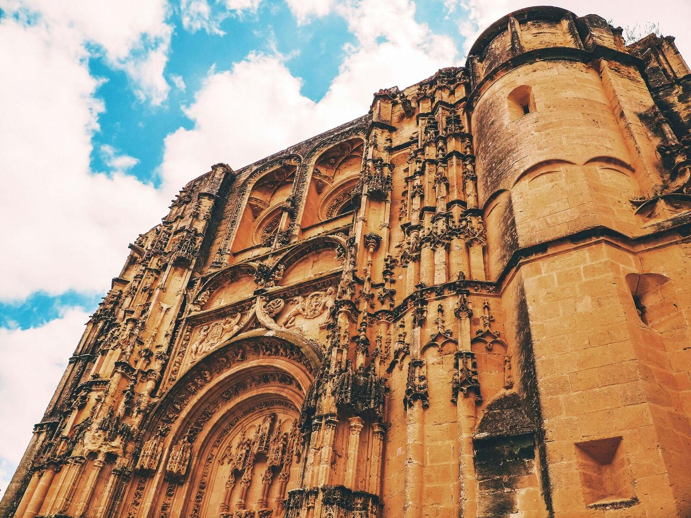
Basilica of Santa María Old town
Old town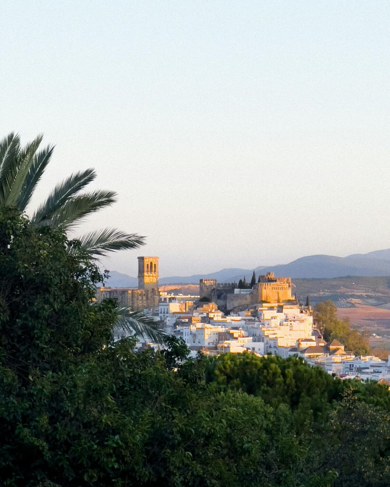
Arcos at duskSome experiences require no day trip at all.
Arcos rises dramatically above the River Guadalete: white houses, narrow streets, the Plaza del Cabildo, the Ducal Castle and the Basilica of Santa María. Below the town, the lake adds kayaking, paddle sports, birdwatching, walking and sunsets.
Arcos de la Frontera · Arcos Lake · Local vineyards · Cádiz countryside
Jerez de la Frontera · Sierra de Grazalema · El Bosque · Ubrique · Zahara de la Sierra
El Puerto · Cádiz · Chiclana · Sancti Petri · Conil · Vejer · El Palmar · Zahara de los Atunes · Bolonia · Tarifa · Sanlúcar
This geographical diversity is one of Arcos Golf by Patiño Resorts’ greatest assets.
Dashed rings: 25 · 50 · 75 km in a straight line from Arcos. Select a place on the map to go to it.
Long beaches, dunes, pine forests, fishing villages, beach restaurants and sunsets, very different from the Mediterranean. Morning golf, then choose a different Atlantic depending on your mood.
Culture, seafood, beach and sunset in one of Europe’s oldest cities. La Caleta for romance, La Victoria for kilometres of beach.
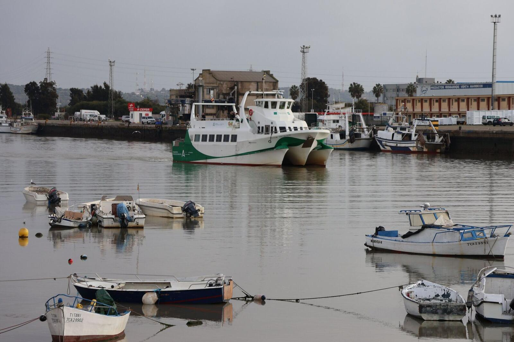
One of the three towns of the sherry triangle. Bodega, seafood by the river, beach and sunset over the bay.
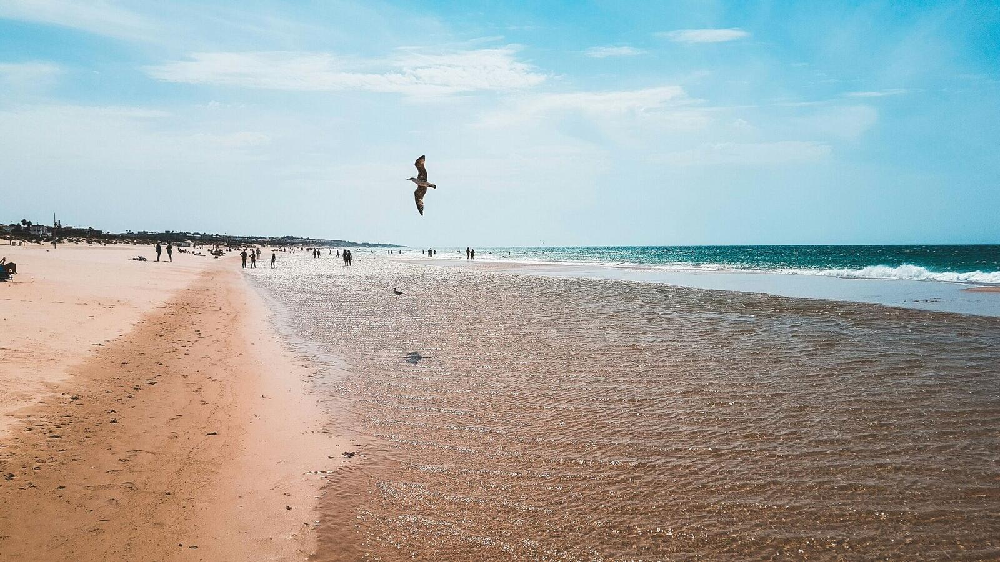
Wide beaches, beach clubs, sailing and spectacular sunsets. Particularly attractive for families.

Here Cádiz becomes informal: surfing, barefoot lunches, beach bars, music and sunsets.

Vejer + El Palmar: culture in the morning, Atlantic in the afternoon.

More sophisticated, more gastronomic, more exclusive. Beach, tuna, sunset, dinner.

An enormous beach, a spectacular dune and, beside the sea, the Roman town of Baelo Claudia.

Kitesurfing, whale and dolphin watching and views towards Morocco, or a day trip across the Strait.
Few cities have created three cultural identities recognised around the world. Jerez has. This allows Arcos Golf by Patiño Resorts to offer one of its strongest premium excursions.
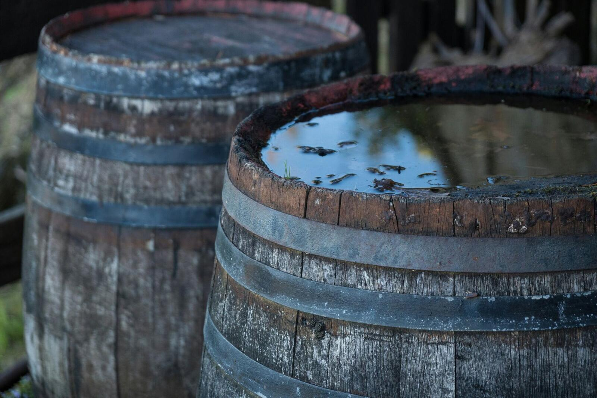
Centuries-old bodegas and some of the world’s most distinctive wines.
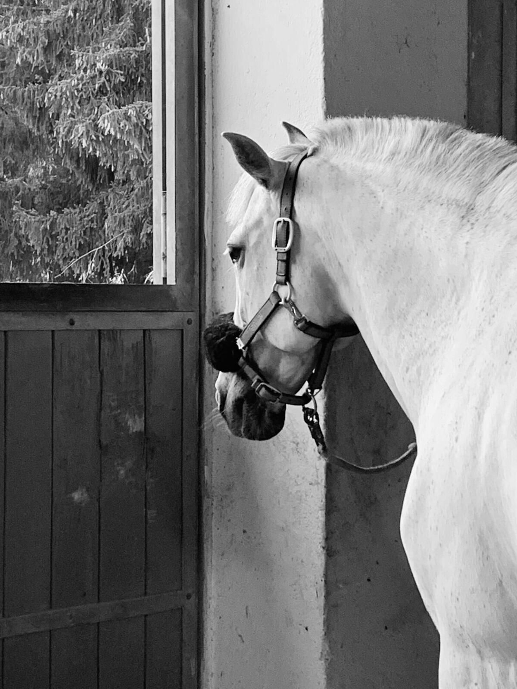
The tradition of the Andalusian horse, at home in the Royal Andalusian School of Equestrian Art.

One of the historic centres of flamenco culture.
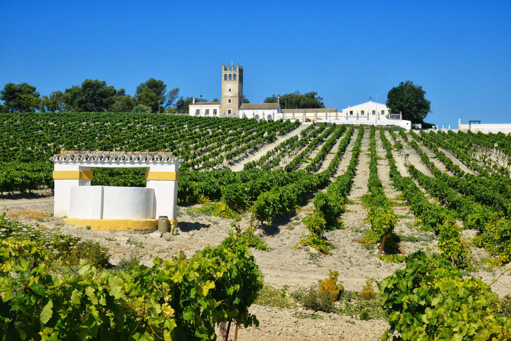
Vineyards on albariza soil, JerezThe countryside surrounding Arcos is also developing its own wine identity. Boutique vineyards and wineries create opportunities for much more intimate experiences.
 Zahara de la Sierra
Zahara de la Sierra Grazalema
GrazalemaWalking trails. Quiet roads. Traditional restaurants.
The Sierra de Grazalema is an extraordinary counterpoint to the beaches of Cádiz, and the Ruta de los Pueblos Blancos begins at the resort’s door.
And for the wild side of Cádiz, the cork oak forests of Los Alcornocales.
 Flamingos
Flamingos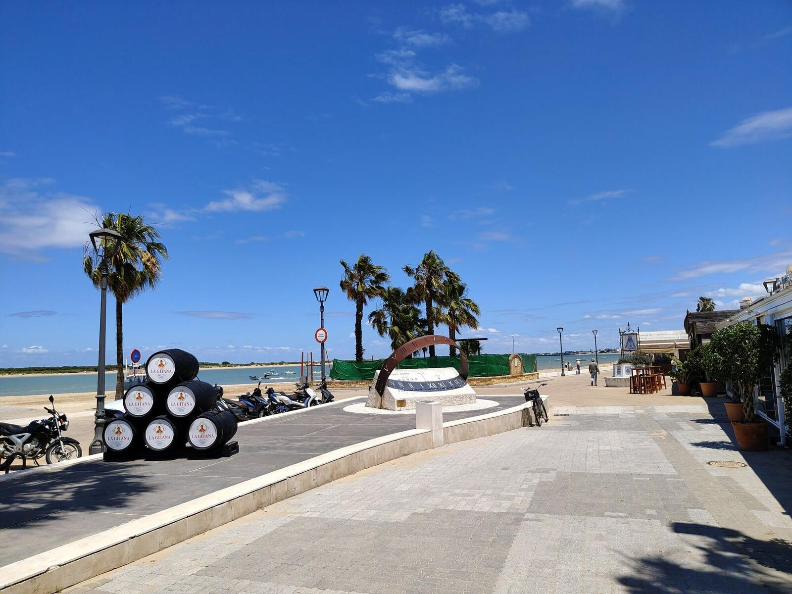
Bajo de Guía, SanlúcarLeave the golf course in Arcos. Reach Sanlúcar. Cross the Guadalquivir.
And enter one of Europe’s most celebrated natural environments, then return to Sanlúcar, one of Cádiz’s great gastronomic destinations: Bajo de Guía, manzanilla, seafood and langostinos.
Golf runs through the week. Every itinerary can be shaped around the guest.


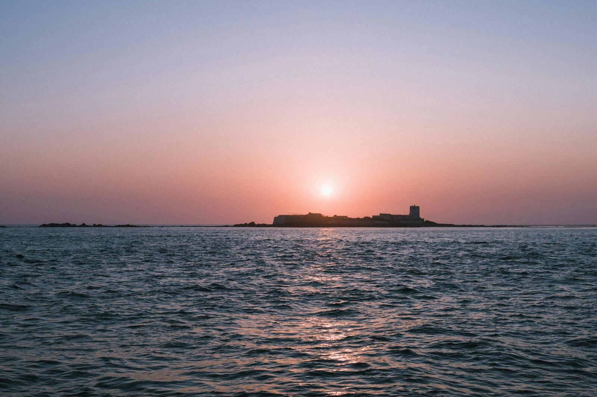
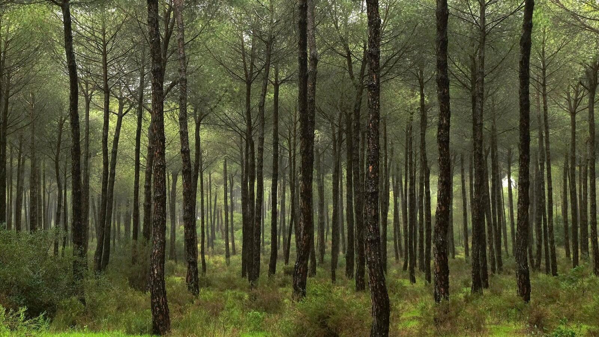


The real strength of Arcos Golf by Patiño Resorts appears when the stay becomes longer. A guest can spend fourteen days here without repeating the same experience.